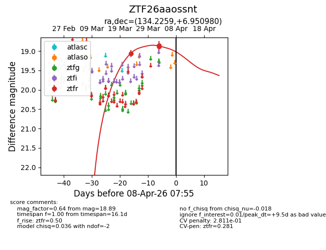
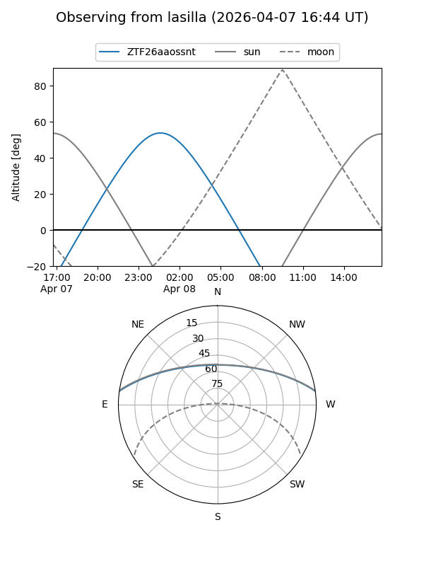
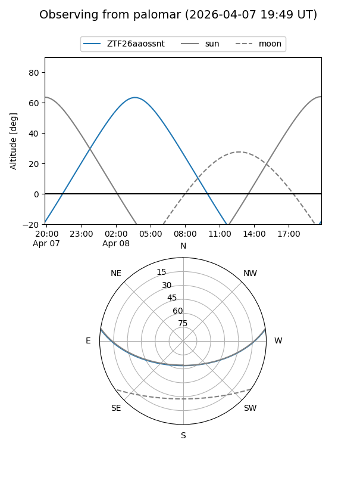
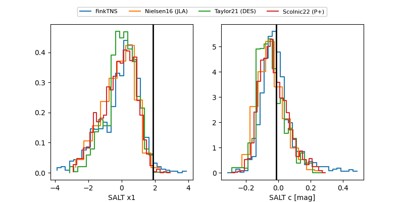

ZTF26aaossnt
Target ZTF26aaossnt at 2026-04-08 08:00
Aliases and brokers:
FINK: link
Lasair: link
ALeRCE: link
alt names
ZTF26aaossnt (ztf,fink_ztf)
Coordinates:
equatorial (ra, dec) = 134.2259,+6.95098
equatorial (HMS+DMS) = 08:56:54.22,+06:57:03.53
galactic (l, b) = (221.5127,+30.99917)
Flags:
likely cv
Photometry:
last ztfr=18.89
3 ztfr detections
Lightcurve

Visibility


Additional plots
